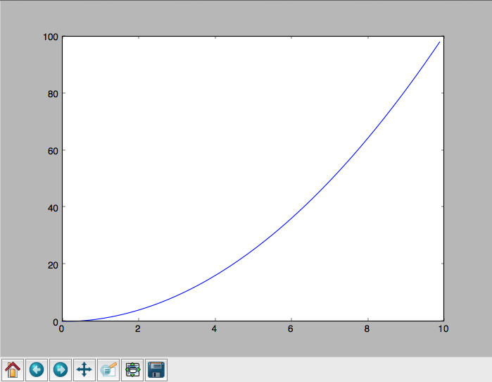

Threading and multiprocessing¶
Threading / multiprocessing¶
How to actually DO threading and multiprocessing:
threadingmodulemultiprocessingmodule
Parallel programming can be hard!
If your problem can be solved sequentially, consider the costs and benefits before going parallel.
Parallelization Strategy for Performance¶

- Not every problem is parallelizable
- There is an optimal number of threads for each problem in each environment, so make it tunable
- Working concurrently opens up synchronization issues
- Methods for synchronizing threads:
- locks
- queues
- signaling/messaging mechanisms
The mechanics: how do you use threads and/or processes¶
Python provides the threading and multiprocessing modules to facility concurrency.
They have similar APIs – so you can use them in similar ways.
Key points:
- There is no Python thread scheduler, it is up to the host OS. yes these are “true” threads.
- Works well for I/O bound problems, can use literally thousands of threads
- Limit CPU-bound processing to C extensions (that release the GIL)
- Do not use for CPU bound problems, will go slower than no threads, especially on multiple cores!!! (see David Beazley’s talk referenced above)
Starting threads is relatively simple, but there are many potential issues.
We already talked about shared data, this can lead to a “race condition”.
- May produce slightly different results every run
- May just flake out mysteriously every once in a while
- May run fine when testing, but fail when run on: - a slower system - a heavily loaded system - a larger dataset
- Thus you must synchronize threads!
Example: A CPU bound problem¶
Numerically integrate the function \(y =x^2\) from 0 to 10.
http://www.wolframalpha.com/input/?i=x%5E2
{kind=link}
Parallel execution example¶
Consider the following code in:
integrate.py
def f(x):
return x**2
def integrate(f, a, b, N):
s = 0
dx = (b-a)/N
for i in xrange(N):
s += f(a+i*dx)
return s * dx
We can do better than this
Break down the problem into parallelizable chunks, then add the results together:
The threading module¶
Starting threads doesn’t take much:
import sys
import threading
import time
def func():
for i in xrange(5):
print("hello from thread %s" % threading.current_thread().name)
time.sleep(1)
threads = []
for i in xrange(3):
thread = threading.Thread(target=func, args=())
thread.start()
threads.append(thread)
- The process will exit when the last non-daemon thread exits.
- A thread can be specified as a daemon thread by setting its daemon
attribute:
thread.daemon = True - daemon threads get cut off at program exit, without any opportunity for cleanup. But you don’t have to track and manage them. Useful for things like garbage collection, network keepalives, ..
- You can block and wait for a thread to exit with thread.join()
Subclassing Thread¶
You can add threading capability to your own classes
Subclass Thread and implement the run method
import threading
class MyThread(threading.Thread):
def run(self):
print("hello from %s" % threading.current_thread().name)
thread = MyThread()
thread.start()
Race Conditions¶
In the last example we saw threads competing for access to stdout.
Worse, if competing threads try to update the same value, we might get an unexpected race condition
Race conditions occur when multiple statements need to execute atomically, but get interrupted midway
No race condition¶
| Thread 1 | Thread 2 | Integer value | |
|---|---|---|---|
| 0 | |||
| read value | ← | 0 | |
| increase value | 0 | ||
| write back | → | 1 | |
| read value | ← | 1 | |
| increase value | 1 | ||
| write back | → | 2 |
Race Condition!¶
| Thread 1 | Thread 2 | Integer value | |
|---|---|---|---|
| 0 | |||
| read value | ← | 0 | |
| read value | ← | 0 | |
| increase value | 0 | ||
| increase value | 0 | ||
| write back | → | 1 | |
| write back | → | 1 |
Deadlocks¶
Synchronization and Critical Sections are used to control race conditions
But they introduce other potential problems…
like: http://en.wikipedia.org/wiki/Deadlock
“A deadlock is a situation in which two or more competing actions are each waiting for the other to finish, and thus neither ever does.”
When two trains approach each other at a crossing, both shall come to a full stop and neither shall start up again until the other has gone
See also Livelock:
Two people meet in a narrow corridor, and each tries to be polite by moving aside to let the other pass, but they end up swaying from side to side without making any progress because they both repeatedly move the same way at the same time.
Locks¶
Lock objects allow threads to control access to a resource until they’re done with it
This is known as mutual exclusion, often called “mutex”.
A Lock has two states: locked and unlocked
If multiple threads have access to the same Lock, they can police
themselves by calling its .acquire() and .release() methods
If a Lock is locked, .acquire will block until it becomes unlocked
These threads will wait in line politely for access to the statements in f()
Mutex locks (threading.Lock)¶
- Probably most common
- Only one thread can modify shared data at any given time
- Thread determines when unlocked
- Must put lock/unlock around critical code in ALL threads
- Difficult to manage
Easiest with context manager:
x = 0
x_lock = threading.Lock()
# Example critical section
with x_lock:
# statements using x
Only one lock per thread! (or risk mysterious deadlocks)
Or use RLock for code-based locking (locking function/method execution rather than data access)
import threading
import time
lock = threading.Lock()
def f():
lock.acquire()
print("%s got lock" % threading.current_thread().name)
time.sleep(1)
lock.release()
threading.Thread(target=f).start()
threading.Thread(target=f).start()
threading.Thread(target=f).start()
Nonblocking Locking¶
.acquire() will return True if it successfully acquires a lock
Its first argument is a boolean which specifies whether a lock should
block or not. The default is True
import threading
lock = threading.Lock()
lock.acquire()
if not lock.acquire(False):
print("couldn't get lock")
lock.release()
if lock.acquire(False):
print("got lock")
threading.RLock - Reentrant Lock¶
Useful for recursive algorithms, a thread-specific count of the locks is maintained
A reentrant lock can be acquired multiple times by the same thread
Lock.release() must be called the same number of times as Lock.acquire()
by that thread
threading.Semaphore¶
Like an RLock, but in reverse
A Semaphore is given an initial counter value, defaulting to 1
Each call to acquire() decrements the counter, release() increments it
If acquire() is called on a Semaphore with a counter of 0, it will block
until the Semaphore counter is greater than 0.
Useful for controlling the maximum number of threads allowed to access a resource simultaneously

Events (threading.Event)¶
- Threads can wait for particular event
- Setting an event unblocks all waiting threads
Common use: barriers, notification
Condition (threading.Condition)¶
- Combination of locking/signaling
- lock protects code that establishes a “condition” (e.g., data available)
- signal notifies threads that “condition” has changed
Common use: producer/consumer patterns
Locking Exercise¶
In: lock/stdout_writer.py
Multiple threads in the script write to stdout, and their output gets jumbled
- Add a locking mechanism to give each thread exclusive access to stdout
- Try adding a Semaphore to allow 2 threads access at once
Managing thread results¶
We need a thread safe way of storing results from multiple threads of execution. That is provided by the Queue module.
Queues allow multiple producers and multiple consumers to exchange data safely
Size of the queue is managed with the maxsize kwarg
It will block consumers if empty and block producers if full
If maxsize is less than or equal to zero, the queue size is infinite
from Queue import Queue
q = Queue(maxsize=10)
q.put(37337)
block = True
timeout = 2
print(q.get(block, timeout))
Queues (queue)¶
- Easier to use than many of above
- Do not need locks
- Has signaling
Common use: producer/consumer patterns
from Queue import Queue
data_q = Queue()
Producer thread:
for item in produce_items():
data_q.put(item)
Consumer thread:
while True:
item = q.get()
consume_item(item)
Scheduling (sched)¶
- Schedules based on time, either absolute or delay
- Low level, so has many of the traps of the threading synchronization primitives.
Timed events (threading.timer)¶
Run a function at some time in the future:
import threading
def called_once():
"""
this function is designed to be called once in the future
"""
print("I just got called! It's now: {}".format(time.asctime()))
# setting it up to be called
t = Timer(interval=3, function=called_once)
t.start()
# you can cancel it if you want:
t.cancel()
Other Queue types¶
Queue.LifoQueue
- Last In, First Out
Queue.PriorityQueue
- Lowest valued entries are retrieved first
One pattern for PriorityQueue is to insert entries of form data by
inserting the tuple:
(priority_number, data)
Threading example with a queue¶
#!/usr/bin/env python
import threading
import queue
# from integrate.integrate import integrate, f
from integrate import f, integrate_numpy as integrate
from decorators import timer
@timer
def threading_integrate(f, a, b, N, thread_count=2):
"""break work into N chunks"""
N_chunk = int(float(N) / thread_count)
dx = float(b - a) / thread_count
results = queue.Queue()
def worker(*args):
results.put(integrate(*args))
for i in range(thread_count):
x0 = dx * i
x1 = x0 + dx
thread = threading.Thread(target=worker, args=(f, x0, x1, N_chunk))
thread.start()
print("Thread %s started" % thread.name)
return sum((results.get() for i in range(thread_count)))
if __name__ == "__main__":
# parameters of the integration
a = 0.0
b = 10.0
N = 10**8
thread_count = 8
print("Numerical solution with N=%(N)d : %(x)f" %
{'N': N, 'x': threading_integrate(f, a, b, N, thread_count=thread_count)})
Threading on a CPU bound problem¶
Try running the code in integrate_threads.py
It has a couple of tunable parameters:
a = 0.0 # the start of the integration
b = 10.0 # the end point of the integration
N = 10**8 # the number of steps to use in the integration
thread_count = 8 # the number of threads to use
What happens when you change the thread count? What thread count gives the maximum speed?
Multiprocessing¶
- processes are completely isolated
- no locking :) (and no GIL!)
- instead of locking: messaging
multiprocessing provides an API very similar to threading, so the transition is easy
use multiprocessing.Process instead of threading.Thread
import multiprocessing
import os
import time
def func():
print "hello from process %s" % os.getpid()
time.sleep(1)
proc = multiprocessing.Process(target=func, args=())
proc.start()
proc = multiprocessing.Process(target=func, args=())
proc.start()
Differences with Threading¶
Multiprocessing has its own multiprocessing.Queue which handles
interprocess communication
Also has its own versions of Lock, RLock, Semaphore
from multiprocessing import Queue, Lock
multiprocessing.Pipe for 2-way process communication:
from multiprocessing import Pipe
parent_conn, child_conn = Pipe()
child_conn.send("foo")
print parent_conn.recv()
Messaging¶
Pipes (multiprocessing.Pipe)¶
- Returns a pair of connected objects
- Largely mimics Unix pipes, but higher level
- send pickled objects or buffers
Queues (multiprocessing.Queue)¶
- same interface as
queue.Queue- implemented on top of pipes
- means you can pretty easily port threaded programs using queues to multiprocessing - queue is the only shared data - data is all pickled and unpickled to pass between processes – significant overhead.
Other features of the multiprocessing package¶
- Pools
- Shared objects and arrays
- Synchronization primitives
- Managed objects
- Connections
Pooling¶
A processing pool contains worker processes with only a configured number running at one time
from multiprocessing import Pool
pool = Pool(processes=4)
The Pool module has several methods for adding jobs to the pool
apply_async(func[, args[, kwargs[, callback]]])
map_async(func, iterable[, chunksize[, callback]])
Pooling example¶
from multiprocessing import Pool
def f(x):
return x*x
if __name__ == '__main__':
pool = Pool(processes=4)
result = pool.apply_async(f, (10,))
print(result.get(timeout=1))
print(pool.map(f, range(10)))
it = pool.imap(f, range(10))
print(it.next())
print(it.next())
print(it.next(timeout=1))
import time
result = pool.apply_async(time.sleep, (10,))
print(result.get(timeout=1))
http://docs.python.org/3/library/multiprocessing.html#module-multiprocessing.pool
ThreadPool¶
Threading also has a pool
Confusingly, it lives in the multiprocessing module
from multiprocessing.pool import ThreadPool
pool = ThreadPool(processes=4)